The era of V8 power, tailfins, and cultural icons
The period from 1950 to 1980 represents the most exciting and transformative era in automotive history. It was an age of optimism, excess, and innovation - where cars became cultural icons and expressions of personal freedom.
The 1950s exploded with chrome, color, and aviation-inspired design. American cars grew longer, lower, and wider each year, adorned with massive tailfins inspired by fighter jets. Harley Earl at General Motors pioneered the art of "planned obsolescence," introducing annual styling changes to encourage frequent trade-ins.
The 1960s brought the muscle car revolution. In 1964, Ford introduced the Mustang, creating the "pony car" segment and selling over 400,000 units in its first year. Soon, every manufacturer had a muscle car: Chevrolet Camaro, Pontiac GTO, Dodge Charger, Plymouth Barracuda. These were affordable performance cars with massive V8 engines, appealing to a young, prosperous generation.
Meanwhile, Europe took a different path. Brands like Ferrari, Lamborghini, Porsche, and Jaguar focused on sports cars and grand tourers - lighter, more agile, and often more exotic. The 1966 Lamborghini Miura established the mid-engine supercar template that continues today.
The party ended in 1973 with the OPEC oil embargo. Fuel prices skyrocketed, insurance rates climbed, and emissions regulations strangled performance. The mighty V8s were choked with smog equipment, and by 1980, the muscle car was effectively dead - though its legend would live forever.
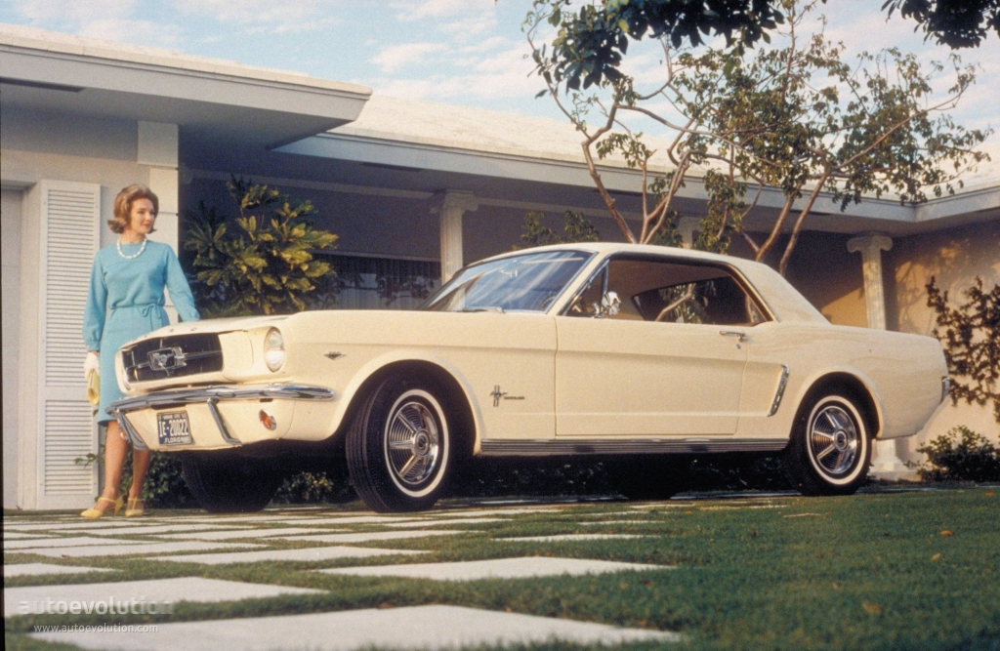
1964½ Ford Mustang - The original pony car
The first American sports car debuts with fiberglass body. Early models had modest performance, but it would become an American icon.
Chevrolet introduces the legendary small-block V8, a compact, lightweight, and powerful engine that would power millions of vehicles for decades.
The 1957 Cadillac Eldorado Brougham features the tallest, most extravagant tailfins ever, epitomizing 1950s excess.
Alec Issigonis designs the Mini, revolutionizing small car design with transverse engine and front-wheel drive. Becomes a 1960s icon.
Jaguar unveils the E-Type. Enzo Ferrari calls it "the most beautiful car ever made." Its 150 mph performance costs half of comparable Ferraris.
Porsche introduces the 911, a car that would remain in continuous production for over 50 years, becoming the definitive sports car.
The Ford Mustang launches at the New York World's Fair, creating the pony car segment and selling 22,000 units on the first day.
Considered the first true muscle car - a mid-size car with a big-block V8. The formula of "horsepower on a budget" is born.
The Miura debuts, establishing the mid-engine layout for supercars. Its beautiful styling by Bertone sets new standards.
Ford GT40 wins Le Mans, beating Ferrari and fulfilling Henry Ford II's mission. It wins again in 1967, 1968, and 1969.
1970 represents the peak of the muscle car era. The Plymouth Hemi Cuda, Chevy Chevelle SS, and Olds 442 offer massive horsepower before emissions strangle them.
Arab oil embargo causes fuel shortages and skyrocketing prices. The era of cheap gas ends, and performance cars fall out of favor.
US national speed limit reduced to 55 mph to conserve fuel. Muscle car sales collapse, and many models are discontinued.
Catalytic converters become mandatory in the US, further reducing performance and increasing complexity.
Big engines, straight lines, and American attitude
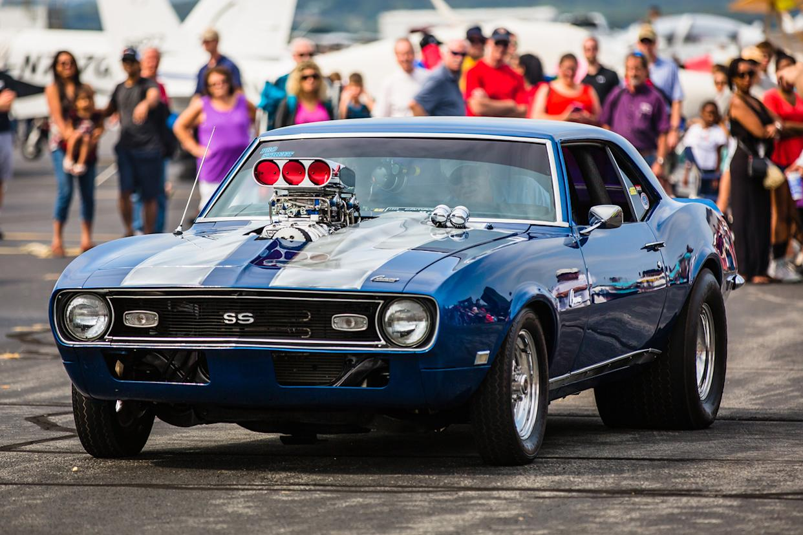
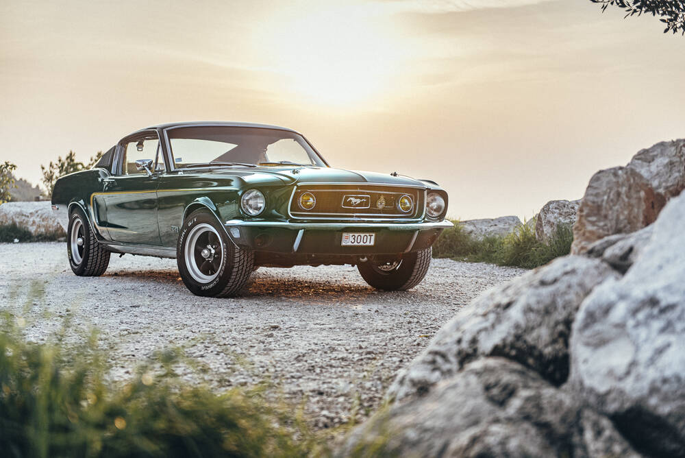
1964-1973 | The original pony car
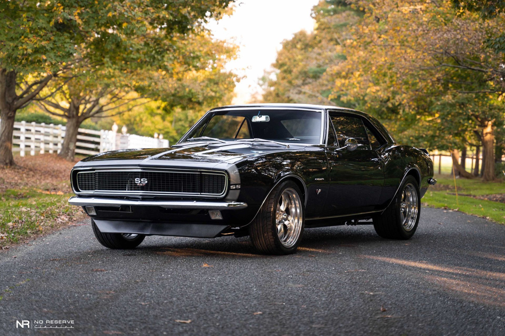
1967-1969 | Mustang fighter
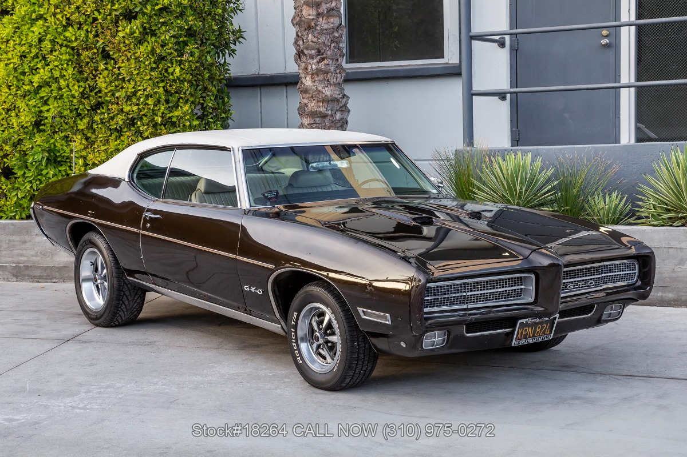
1964-1974 | The first muscle car
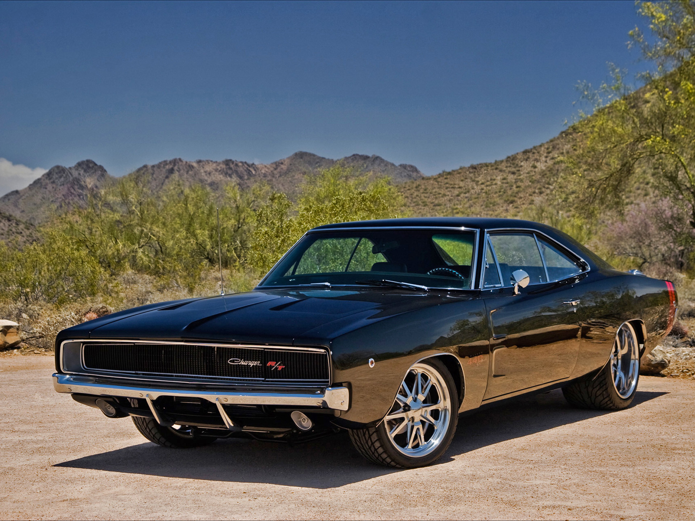
1968-1970 | The General Lee
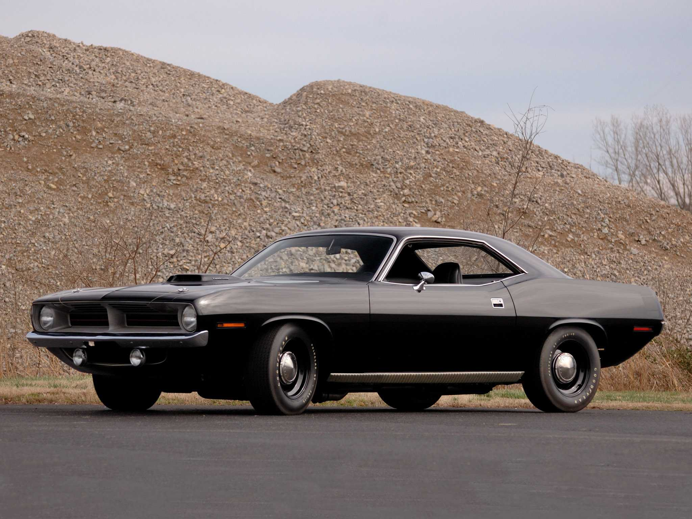
1970 | The ultimate muscle
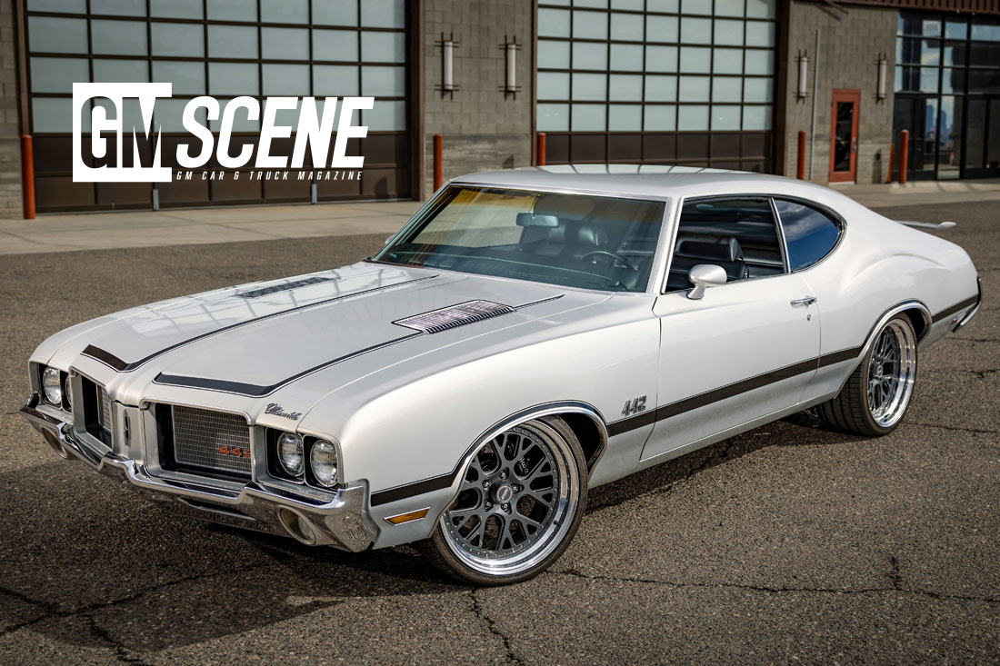
1964-1971 | Four-four-two
425 hp | 490 lb-ft | Chrysler
450 hp | 500 lb-ft | Chevrolet
335 hp | 440 lb-ft | Ford
310 hp | 410 lb-ft | Pontiac
Precision, handling, and exotic design
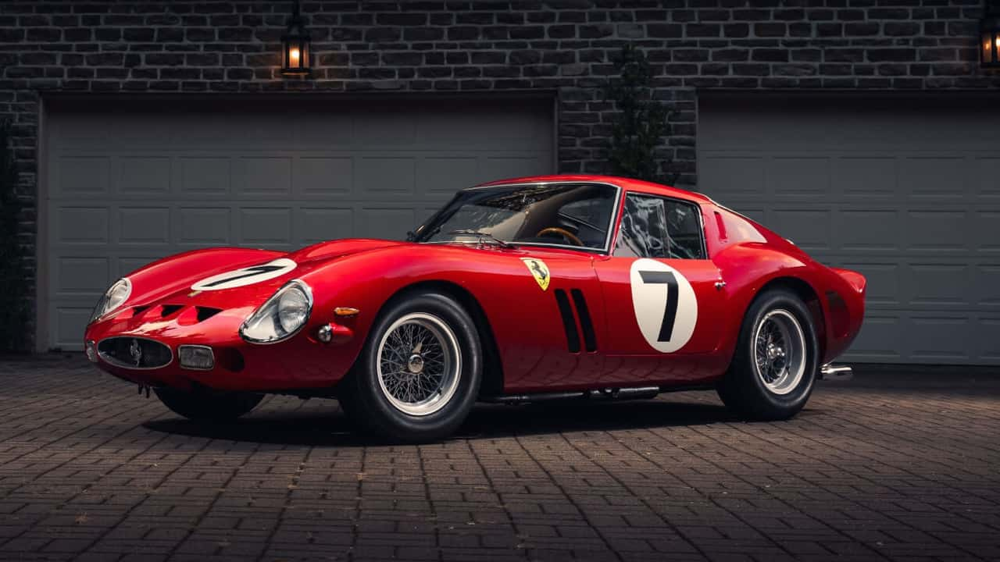
1962-1964 | The most valuable car in the world
3.0L V12 | 300 hp | 36 built
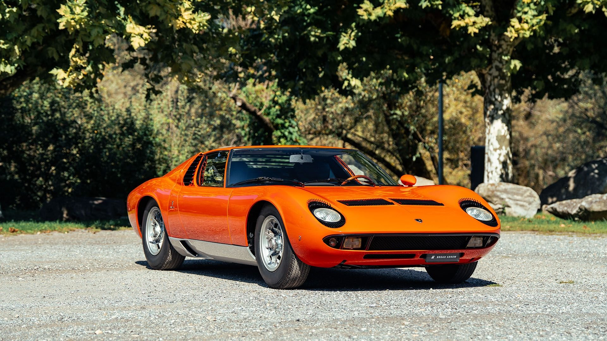
1966-1973 | First supercar
3.9L V12 | 350 hp | 170 mph
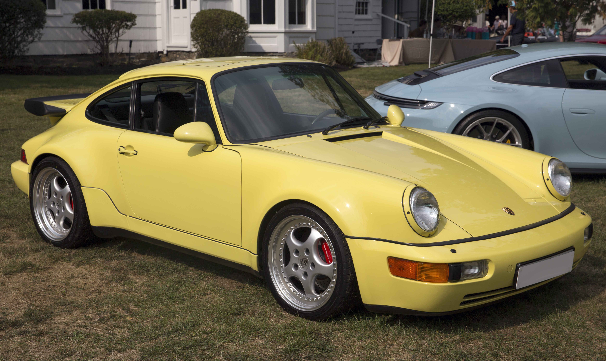
1963-present | Timeless icon
2.0L flat-6 | 130 hp | 130 mph
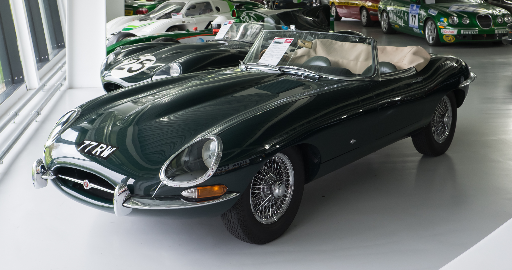
1961-1975 | Most beautiful car
3.8L straight-6 | 265 hp | 150 mph
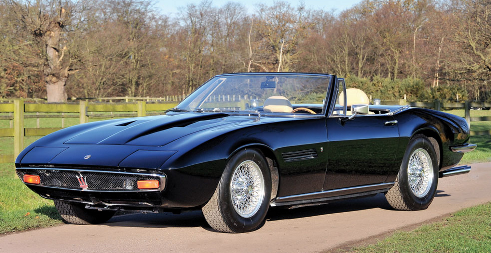
1967-1973 | Italian elegance
4.7L V8 | 330 hp | 155 mph
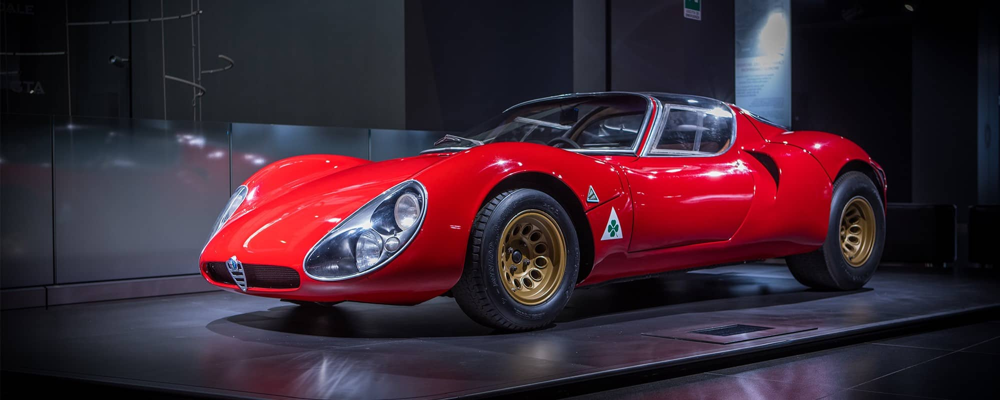
1967-1969 | Art on wheels
2.0L V8 | 230 hp | 18 built
"The E-Type is the most beautiful car ever made."- Enzo Ferrari
The dramatic evolution of automotive design
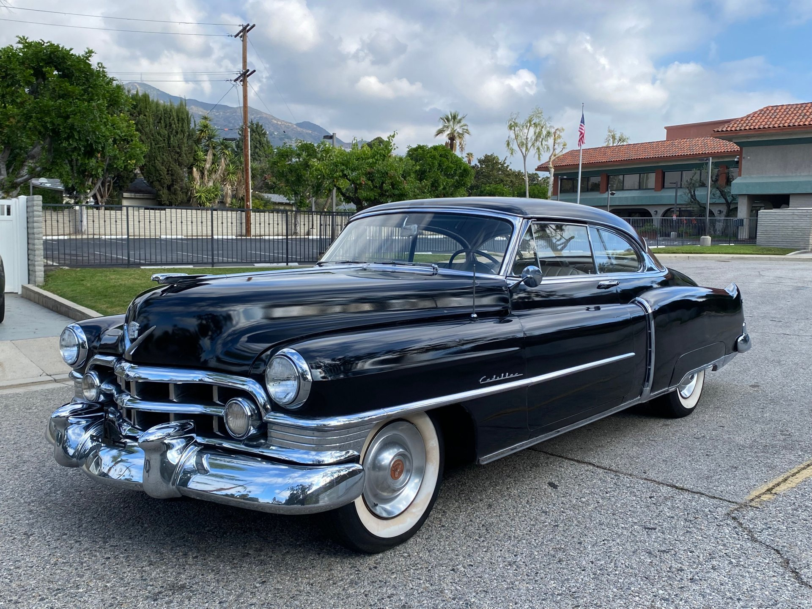
Tailfins, chrome, and aircraft-inspired design. Cars celebrated American optimism and space-age dreams.
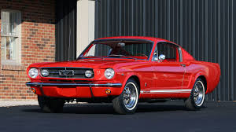
Long hoods, short decks, and aggressive stance. Design followed function - to house big V8s.
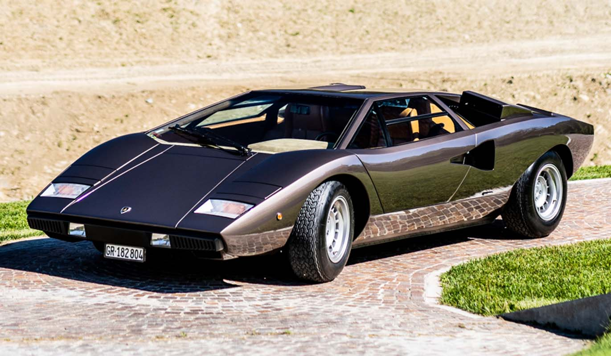
Angular, sharp, and futuristic. The Lamborghini Countach defined the wedge era.
GM | Tailfins, Corvette
GM | Sting Ray, Corvette
Bertone | Miura, Countach
Ferrari | Many classics
In October 1973, OPEC proclaimed an oil embargo against countries supporting Israel. The price of oil quadrupled, and gas stations ran out of fuel. Long lines, rationing, and panic buying became common across America and Europe.
The impact on the auto industry was immediate and severe. Sales of large V8-powered cars collapsed. Manufacturers scrambled to produce smaller, more efficient vehicles. The mighty muscle cars, designed for cheap gas, were suddenly dinosaurs.
By 1974, horsepower ratings had plummeted. The 425 hp Hemi of 1971 became a 250 hp shadow of itself by 1974. Catalytic converters, unleaded fuel, and emissions controls strangled performance. The party was over.
The crisis had lasting effects: Japanese imports gained massive market share, fuel economy became a selling point, and government regulations would shape cars for decades to come.
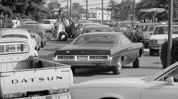
Long lines at gas stations, 1973